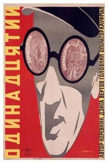

Vladimir & Georgi Stenberg (Redirected from Odinnadstaty)
From The Giant: The Definitive Obey Giant Site
From Wikipedia:
Georgii Stenberg (b. Moscow, March 20, 1900; d. Moscow, October 15, 1933) and Vladimir Stenberg (b. Moscow, April 4, 1899; d. Moscow, 1982), Russian artists and designers.
The Stenberg brothers, whose father was Russian and mother Swedish, studied engineering, then attended the Stroganov School in Moscow, 1912–17, and subsequently the Svomas (Moscow free studios), where they and other students designed decorations and posters for the first (1918) May Day celebration. 1919, the Stenbergs and comrades founded the OBMOKhU (society of young artists) and participated in its first group exhibition in Moscow in May 1919 and in the exhibitions of 1920, 1921 and 1923. The brothers and Konstantin Medunetskii staged their own "Constructivists" exhibition in January 1922 at the Poets Café Moscow, accompanied by a Constructivist manifesto. Also that year, Vladimir showed his work in the landmark Erste Russische Kunstausstellung (first Russian art exhibition) held in Berlin. 1920s–30s, they were well established as members of the avant-garde in Moscow and of Moscow's INKhUK (INstitut KHUdozhestvennoy Kultury, or institute of artistic culture). Other INKhUK members included Alexandr Rodchenko, Varvava Stepanova, Lyubov Popova, Medunetskii, other artists, architects, theoreticians, and art historians. INKhUK wasactive only 1921–24.
1922–31, the Stenbergs designed sets and costumes for Alexander Tairov's Kamerny (chamber) Theatre and contributed to LEF (art journal of the left front) and to the 1925 "Exposition Internationale des Arts Décoratifs et Industriels Modernes" in Paris. 1929–32, they taught at the Architecture-Construction Institute, Moscow.
The Stenbergs practiced in a range of media, initially active as Constructivist sculptors, subsequently as theater designers, architects, and draftspeople. Their design work covered the gamut from clothing, including women's shoes, to rail carriages. Some examples of their sculpture were spidery and spindly structures, such as the reconstruction (1973–74) of KPS 11: Construction of a spatial apparatus no. 11 (1919–20) in steel, glass, paint and plaster on wood in the National Gallery of Australia Canberra. However, the arenas in which they excelled were theater, costume and graphic designs, particularly the graphic design of film posters, encouraged by the surging interest in movies in Russia and the government's sanctioning of graphic design and the cinema.
The brothers were at their prime during the revolutionary period of politics and artistic experimentation in Russia, centered in Moscow. There was a shift from the illustrator-as-creator to the constructor-as-creator or nonlinear-narrator-as-creator. In the visual language of the constructor or Constructivist, the Stenbergs and other graphic designers and artists assembled images, such as portions of photographs and preprinted paper, that had been created by others. Thus, the Stenbergs and others realized wholly new images (or compositions) which were no longer about realism. Hence, graphic design as a modern expression eschewing traditional fine art was born in the form of the printed reproductions of collage or assemblage. One of the causes of the avant-garde artists in the new Russia, who considered fine art to be useless, was served when the Sternbergs and others as constructors-as-creators produced posters that had a use, particularly to serve the state. (In fact, painter Nadezhda Udaltsova resigned from the UNKhUK in protest against the replacement of easel painting by use-intended industrial art.)
The serendipitous success of the Stenbergs' radical approach had been facilitated by a number of factors: their talent as graphic designers and their knowledge of film theory, Constructivism, Malevich's Suprematism, and the avant-garde theater. Even though commercial graphic design and advertising is propaganda, the dissemination of propaganda (пропаганды) was considered a desirable and honorable practice in Russia at the time. In fact, the Bolshevicks, who sought to distroy the peasant class, considered film to be a potent propaganda tool for communicating with a widely illiterate population. Even though most films were imported, the Stenbergs designed posters for Sergei Eisenstein's movies and Dziga Vertov's documentaries.
The innovative visual aspects of Sternberg posters included a distortion of perspective, elements from Dada photomontage, an exaggerated scale, a sense of movement, and a dynamic use of color and typography—eventually all were to be imitated by others. The Stenberg artwork was frequently based on stills from the films. Radical even today, the posters by the brothers working together were realized within the nine-year period from 1924 to 1933, the year Georgii died at age 33. His motorcycle hit a truck, a few months after the brothers had become Russian citizens. Vladimir continued to work on film posters and organized the decorations of Moscow's Red Square for the May Day celebration of 1947.
From the New York Times:
June 13, 1997
Mementos of a Revolution Repressed
By MICHAEL KIMMELMAN
FOR a few wild years during the 1920's, the Russian avant-garde tried to lead the masses to Utopia, but the masses didn't want Utopia. They wanted Buster Keaton.
Isn't that how it always is? When Sergei Eisenstein's Battleship Potemkin opened in Moscow, it sank at the box office, while Russians flocked to see The Mark of Zorro, The Thief of Baghdad and everything else out of darkest capitalist Hollywood. The Russian people, it seems, never got the message that the abstract paintings and experimental films of the avant-garde were for their own benefit. Those crisp geometric designs for women's dresses that avant-gardists like Liubov Popova and Varvara Stepanova conceived for Russia's new classless society didn't even make it to the discount rack at GUM department store. Mother Russia still liked the old floral prints, thank you very much.
So what was a radical to do? Retreat, like Napoleon from Moscow, which is precisely what the avant-gardists quickly did after Stalin came to power and left them no other choice except death. Not the first critic of modern art in Soviet Russia, clearly he was the man with the last word on the subject, and by 1932 the great avant-garde experiment had gone the way of the czars.
A parable of the era in all its heroic absurdity is the exhibition of film posters by the Stenberg brothers, two pioneering Russian Constructivists, at the Museum of Modern Art. Vladimir Stenberg was born in 1899, Georgi Stenberg in 1900, in Moscow, to a Swedish father and Russian mother. The boys studied engineering, then threw themselves into revolutionary art, first helping to compose the manifestos that issued from Moscow's new cafe commissars ("Constructivism will enable mankind to achieve the maximum level of culture with the minimum expense of energy," their manifesto for the 1922 Constructivist exhibition at the Poets Cafe began); then the brothers did radical theater and costume designs.
But they found their metier ultimately with film posters, a perfect niche for revolutionaries because it combined mass production and mass appeal, with a link to the new technology of cinema and agitprop. Beginning in 1923, the Stenbergs made dozens of memorable posters for mostly unmemorable movies, Soviet and foreign. The cinema flourished in Russia from the instant that the French film distributors Pathe and Gaumont established offices there, shortly after the turn of the century. By 1916, some 150 million movie tickets a year were being sold, and Russia was producing 500 films a year, not to mention the hundreds it was importing.
The revolution temporarily devastated the industry: Moscow, which had 143 movie theaters in operation before the war, had none in 1921. But recovery was quick because the Bolsheviks embraced film as the most potent propaganda tool for dealing with a widely illiterate population.
"They sought to destroy backward, peasant Russia, and to build in its place an industrial nation that would surpass Western Europe in its modernity," Peter Kenez, a film historian, has written. "What could be more appropriate to conveying the idea of the beginning of a new era than the use of the most technologically advanced medium?"
But it wasn't easy suddenly to produce propaganda films, and so the Soviets, through the 1920's, continued to import movies, which the authorities weren't beyond doctoring on occasion, to make the plots conform to the Bolshevik agenda. Even many of the Soviet filmmakers ended up catering to the popular taste for escapist entertainment, seasoning their works with small dollops of politics to satisfy Government apparatchiks. In 1928, 300 million movie tickets were sold, most of them for light comedies and melodramas of dubious propaganda value.
The Stenbergs knew, and illustrated posters for, the most venturesome filmmakers, like Eisenstein and Dziga Vertov, whose artistic milieu was their own. But most of their work reflected the movies Russians saw, which remained deliciously irrelevant.
The catalogue and text panels of the Modern's show provide some one-line synopses: The Death Loop, a German melodrama, told the story of a clown and "the beautiful aerialist whom he loves." The Punch, an American film, was about an amateur boxer who throws a fight to earn money for his invalid mother. And Fragment of an Empire, a Soviet film, described an amnesiac who regains his memory a decade after the Bolshevik uprising and "is shocked by the changes brought about by the revolution." The poster for it depicts the face of a screaming man with outstretched hands, as if trying to stop an oncoming train. Maybe something has been lost in the translation.
To a Russian walking down Moscow's grim streets, the sight of a Stenberg poster, bright and jazzy, must have been almost as dazzling as the starlets it advertised, who, after all, were only black-and-white in the movies. Packed with vertiginous images of skyscrapers and machines to evoke modernity, the posters used abstract patterns rooted in Cubist and Futurist art. Their aggressive colors and garish faces came straight from German Expressionism.
They also borrowed from Dadaist photomontage, but it's touching how the Russian avant-garde, dreaming of technological miracles, coped with the banalities of a backward country. Vladimir Tatlin's "Monument to the Third International," Constructivism's signature image, proposed a spiraling structure 1,300 feet high, impossible to build, a technological wish. Tatlin had to make the model out of wood. Similarly, the printing processes available to the Stenbergs in Russia couldn't reproduce black and white photographs in the number and size demanded by their montages. So the brothers ended up drawing the photographs, so accurately that it's hard to see a difference. The benefit, unintended perhaps, turned out to be an allover synthesis of text with image, and a freedom in manipulating the pictures, that probably wouldn't have been possible with actual photomontage.
It's too bad that the Modern's show doesn't include film stills that the Stenbergs based their montages on. But the curator, Christopher Mount, from the department of architecture and design, does a nice job in the catalogue generally relating the posters to Russian avant-garde cinema, with its use of disjointed narrative and shifts of scale.
This leaves aside the simpler, crucial point: that while much of the rest of the Russian avant-garde went about its affairs with grave vanity, the Stenbergs seemed to be having a good time, and they wanted their audience to have a good time, too. A poster for Miss Mend, a Russian film, shows a man perusing a magazine whose small print in English reads: "Only a blind man could miss the tremendous appeal of these crackerjack posters." And who wouldn't want to see A Commonplace Story, a German soap opera about prostitution and mistaken identity, after glimpsing the eye-popping yellow and black poster of a terrified woman in a low-cut dress fleeing three top-hatted swells? Save me an aisle seat.
Of course, just because the Stenbergs didn't seem to take themselves too seriously doesn't mean we shouldn't take their work seriously. People today who are perfectly willing to accept as art the 19th-century poster designs of Toulouse-Lautrec and Jules Cheret, which once were just ephemera plastered to kiosks in Paris, can suddenly turn snobbish about the poster and billboard designs of this century. But the truth is that the Stenbergs probably spread Constructivism more effectively than almost any other visual artists, and came closest to realizing the Russian avant-garde ideal of an art for the masses.
When Stalin came to power, independent artist groups were banned, and Constructivists like Aleksei Gan, Boris Kushner, Gustav Klucis and Nikolai Chuzhak died in labor camps. Georgi Stenberg was killed in 1933 in Moscow after his motorcycle was hit by a truck. Vladimir always blamed the secret police, but spent much of his career working for the state as chief of design for Red Square, a typical Soviet story. He was still jailed for 18 months during a Stalinist purge in the 1950's. He died in 1982, as it happened, on May Day.
"Stenberg Brothers: Constructing a Revolution in Soviet Design," organized with the cooperation of the Ruki Matsumoto Collection in Tokyo, remains at the Museum of Modern Art, 11 West 53d Street, Manhattan, through Sept. 2.
The Stenberg Brothers' 1928 film poster entitled Odinnadstaty (The Eleventh) served as the inspiration for Shepard's 1997 work Glasses:
|  |
{kind=link}
{kind=link}
© Copyright |
|---|
| This page contains an image or images of drawings, paintings, photographs, prints, or other two-dimensional works of art, for which the copyright is presumably owned by either the artist who produced the image, the person who commissioned the work, or the heirs thereof. It is believed that the use of low-resolution images of works of art for critical commentary on the work in question, the artistic genre or technique of the work of art, or the school to which the artist belongs on the English-language website thegiant.org, hosted on servers in the United States, qualifies as fair use under United States copyright law. |